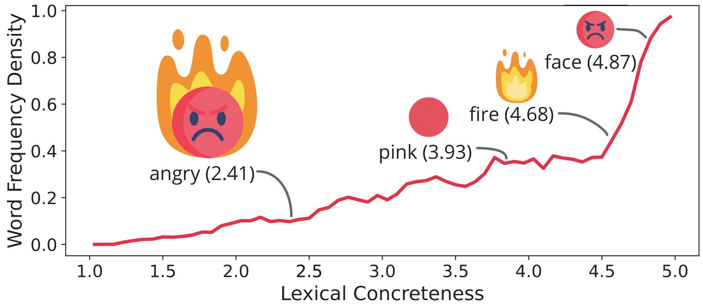
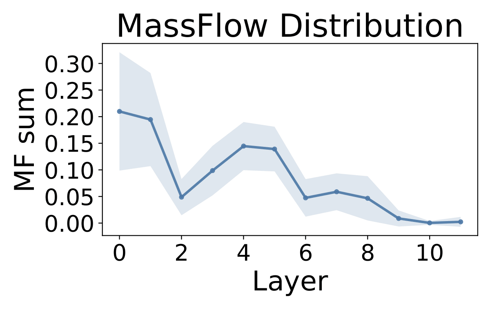
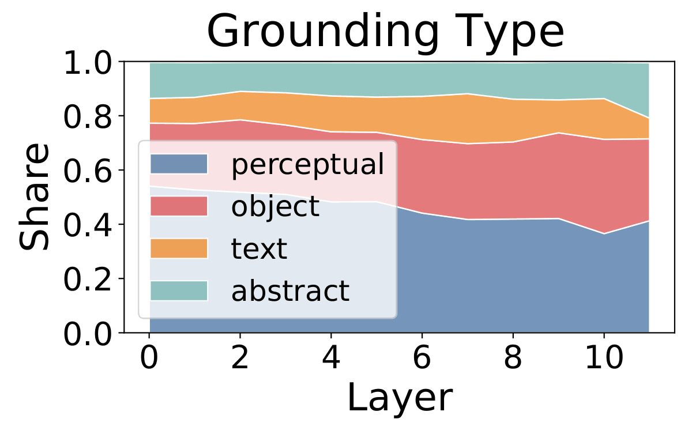
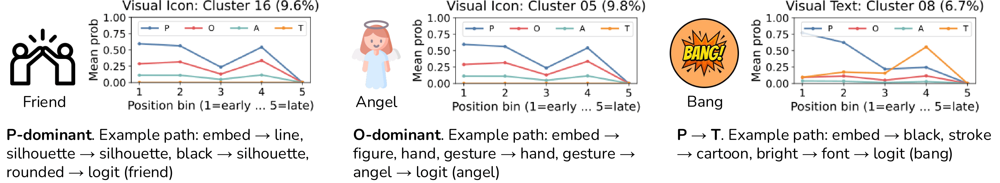
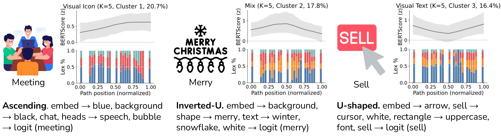
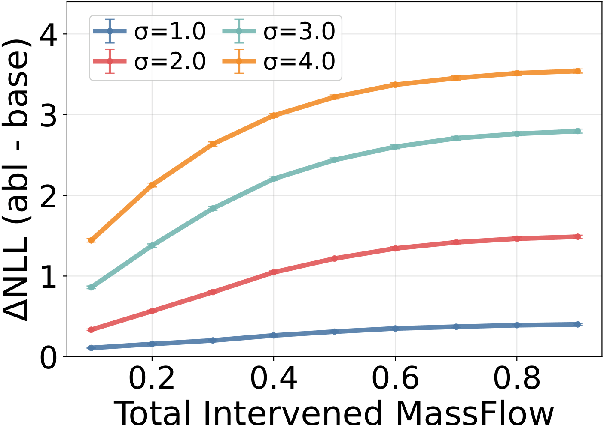
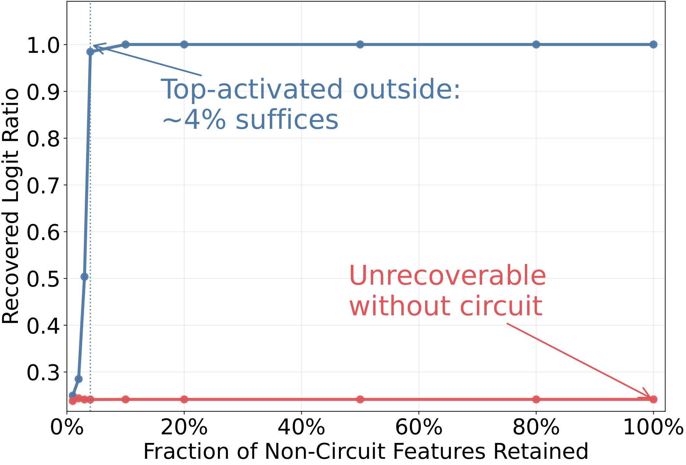
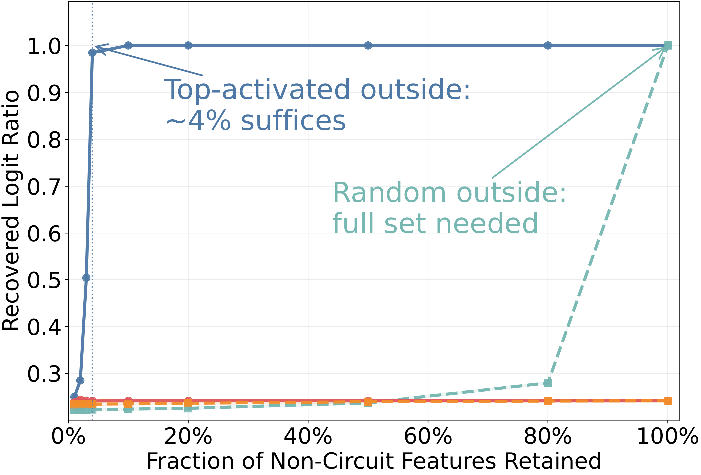
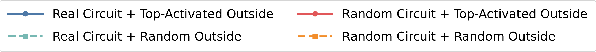

We study how Vision Transformers ground abstract concepts (e.g., angry) when training data provide limited direct referential evidence. We hypothesize a metonymic grounding mechanism in which abstract predictions are driven by concrete, interpretable anchor concepts (e.g., fire) that bridge visual signals to abstract semantics. By applying Transcoders on CLIP and DINO vision encoders, we recover intermediate features that can be associated with semantic labels for more concrete concepts, and trace their contributions in circuits underlying abstract concept recognition. Experiments on a carefully curated icon dataset reveal structured metonymic circuits, in which perceptual primitives dominate early layers and object-like anchors precede abstract targets. Images containing rendered text instead recruit a distinct perceptual-to-textual route. Causal interventions further validate that metonymic intermediates are functionally involved in grounding abstract concepts.
Look at the icon of a flaming, frowning face. Nothing in it literally is anger. It only shows fire, a face, and pinkish colors. Yet we read it as angry without effort. Cognitive linguists call this conceptual metonymy: a small set of salient cues evokes a broader conceptual frame within the same domain.
Vision Transformers face a similar gap. Their training captions are heavily skewed toward concrete words, so abstract terms get scarce direct supervision. Still, ViTs recognize abstract concepts well above chance. We hypothesize that they bridge this gap the same way people do, by routing through intermediate, concrete anchor concepts.

Word-frequency density in OpenCLIP training captions (DataComp-1B), stratified by lexical concreteness (1 = abstract, 5 = concrete; Brysbaert et al., 2014). angry is rare, while its anchors pink, fire, and face are frequent.
Icons are a clean testbed for metonymy: they depict abstract concepts through stable, culturally conventional proxies (e.g., angry via fire and an upset face) with minimal background clutter. We select abstract concepts from the MRC Psycholinguistic Database with low concreteness (< 0.6) but high imageability (> 0.4). For example, chemistry is abstract but readily pictured with test tubes. We then collect icons for each concept from Flaticon.
Many icons contain rendered text, sometimes spelling the target label outright, which may let a model read rather than see. We therefore split each concept's images into three subsets:
Each image is annotated with the concrete concepts it contains and their grounding type: Perceptual (colors, shapes), Object, Abstract, or Textual.
Our pipeline has three steps.
For each ViT layer we train a Transcoder: a sparse module that approximates the MLP's computation as a sparse combination of learned features, \( z_{TC}(x) = \phi_k(W_{enc}x + b_{enc}) \), \( TC(x) = W_{dec}^\top z_{TC}(x) + b_{dec} \), trained to minimize \( \lVert \mathrm{MLP}(x) - TC(x) \rVert^2 \). Unlike SAE features, Transcoder features are a drop-in replacement for the computation itself, so we can trace and intervene on them directly.
Following Ameisen et al. (2025), the edge weight from feature \(s\) to feature \(t\) is \( A_{s \to t} = a_s \cdot \partial a_t / \partial a_s \). Starting from the target logit, we trace all positive-contribution edges backward to build a circuit DAG. To score node importance we introduce MassFlow: we set \( MF(\text{logit}) = 1 \) and let each node pass its mass back to its inputs in proportion to their edge weights. MassFlow measures how much credit flows through a node on its way to the prediction.
We label each feature with concrete concepts in two steps. A static prior measures how strongly a feature correlates (Spearman) with each annotated concept across reference images. A dynamic gate then masks out concepts absent from the current image. This way a polysemantic “red/circle” feature is read as red only when no circle is present.
We trace circuits in OpenCLIP ViT-B/32 and DINOv2-base on 100 concepts × 10 probe images for each subset. CLIP ranks the correct concept top-1 for 74.3% of images and top-5 for 91.6%. We report CLIP results below; DINO results are in the paper.
MassFlow peaks at layers 0–1 and 4–5 and decays sharply after layer 6, so the high-contribution routes are established early. Perceptual features dominate throughout, while Object, Abstract, and Textual features gradually gain share with depth. The shift is gradual rather than a staircase. Human annotators agree with our automatic grounding-type labels in 84.6% of cases (macro-F1 0.831).


Left: layer-wise MassFlow. Right: grounding-type composition within each layer.
Clustering paths by how their grounding types evolve reveals recurring regimes. In P-dominant paths, perceptual signals carry the prediction end to end. In O-dominant paths, object-level anchors stay salient across layers. Images with rendered text instead follow a P→T route from perceptual features to textual ones, which forms a highly isolated cluster. CLIP reads rather than sees in these cases.

Path clusters grouped by grounding-type transitions, each with an example icon and an example metonymic path. Percentages give the cluster's share of total MassFlow within its subset.
Do nodes become more semantically similar to the target concept as computation approaches the logit? We measure this with a calibrated BERTScore and cluster the trajectories by shape. Some paths ascend steadily, but others are flat, peak early (inverted-U), or dip before recovering (U-shaped). Paths that shift toward abstract or textual grounding show stronger late-stage gains than perceptual or object-dominated paths.

Path clusters grouped by node–target alignment trajectories, with grounding-type composition along each path.
Three annotators audited 300 high-MassFlow anchor→target links and 75 mismatched-target controls. Most real links show an identifiable relation to their target, and nearly half are same-frame metonymy. Mismatched controls rarely do.
If metonymic circuits simply mirrored training statistics, concepts with high circuit importance should be the ones that co-occur most with the label in DataComp-1B captions. They are not: correlations with NPMI are weak (\( r \approx 0.07 \)) and almost never survive FDR correction, at every sample size.
| Setting | Mean Spearman \(r\) | Mean \(z\) | Unadj. \(p<0.05\) | FDR \(q<0.05\) |
|---|---|---|---|---|
| 100 concepts × 10 images | 0.066 | 0.57 | 14.1% | 0.0% |
| 50 concepts × 20 images | 0.073 | 0.68 | 13.6% | 5.2% |
| 33 concepts × 30 images | 0.075 | 0.71 | 27.3% | 3.0% |
We inject Gaussian noise into the highest-MassFlow paths and measure the change in the correct label's negative log-likelihood. Damage grows monotonically with the MassFlow we intervene on. At \(\sigma = 3\), hitting 50% of MassFlow raises \(\Delta\)NLL above 2, roughly a sevenfold drop in the probability of the correct label. Random controls of matched size have effects orders of magnitude smaller.

Path interventions across four Gaussian noise scales.
We keep only the circuit, ablate everything else, and then restore non-circuit features from the most to the least activated. The circuit plus just ~3–4% of top-activated outside features nearly restores the logit (0.50 at 3% → 0.98 at 4%). A size-matched random circuit never recovers, no matter how many outside features come back. Restoring outside features at random instead of by activation needs almost the full set. The circuit alone is not sufficient, but it is the part that cannot be replaced.



Circuit recovery. Left: real vs. size-matched random circuit, restoring top-activated non-circuit features. Right: the full 2 × 2 comparison. Aggregated over five seeds under Gaussian-noise ablation at \(\sigma = 4\).
Icons compress complex intent into nonverbal cues, and they are everywhere in the interfaces that computer-use agents operate from screenshots. That compression is also an attack surface: a misleading icon can bias an agent toward a visually signaled option over the one the text actually supports. We probe this with Qwen3-VL-8B-Thinking acting as a desktop agent that must decide where to click.
Example: “Choose the most urgent action to take.” The issue list contains a security fix (Fix authentication vulnerability), a docs update, and a code refactor. The red crosshair marks where the agent clicked.
(a) Text only correct The agent weighs update recency, then picks the vulnerability fix because of what the task says.
(b) Icons agree with the text correct A red alarm sits on the vulnerability fix. The icon reinforces the right choice.
(c) Attack: icons conflict with the text wrong The red alarm is moved to Refactor legacy code. The agent even notes that the vulnerability is a critical security issue, yet concludes “red is highest priority” and clicks the refactor task.
The same happens with a shopping task (“Choose the best deal”): adding a BEST PRICE badge to a worse option makes the agent skip its unit-price calculation and click the badge.
@inproceedings{ding2026metonymic,
title={Metonymic Circuits for Abstract Concept Grounding in Vision Transformers},
author={Ding, Jing and Ma, Ziqiao and Mao, Jiayuan and Chai, Joyce and Shi, Freda},
booktitle={Proceedings of the 2026 Conference on Empirical Methods in Natural Language Processing},
year={2026}
}